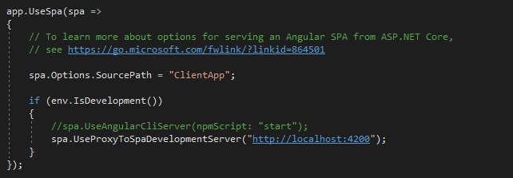
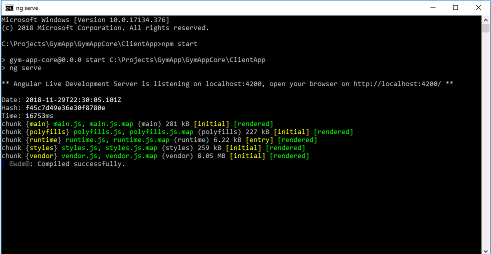
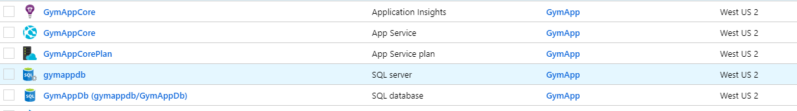

Last post covered .NET Core and completely ignored the front end. This post is going to examine how to work with Angular6 and .NET Core together. The initial setup for this was very difficult. There are many guides out there however very few of them are for the latest version. Angular is still changing so fast that a guide written a few months ago may no longer be relevant.
To get started with Angular6, you need NPM. To use NPM, you need nodejs. I will not write a comprehensive setup guide because that is beyond the scope of this post. By default, .NET Core wants to handle HTML page serving. However, Angular6 comes with its own development server. This server recompiles and refreshes the browser on save automatically. This saves a ton of time during development. Lets take a look at how this is setup.
Tell .NET Core to let Angular6 handle rendering
Here I tell .NET that I want to let Angular handle all rendering of the front end. I could have created a totally separate project to house my Angular code but then I would have to solve the cross origin request issue. By configuring .NET Core this way Angular and my .NET Core api are working together.
Kicking off the Angular6 server via NPM
The next step is to actually start the Angular6 server. Once it is started it will start watching my Angular6 files for changes. There is one part missing though. Angular6 is recompiling and rendering the front end but to where? It is rendering it in that ClientApp folder from the last post. I need to let .NET Core where to look for that pre-rendered code.
Inside the Startup.cs file
That is the last link in the chain. I then was able to create a very simple publishing profile and publish the app to Azure. I don't like using the profile in a true production environment. I did it for this project though because setting up a proper CI/CD pipeline takes a considerable amount of time.
Resources in Azure
This was only a glimpse in the amount of work it took to get this up and running. Just getting my Angular6 project to compile the first time was difficult. Using NPM to manage all my packages took a bit of getting used it. Once I had it running smoothly it was one of the absolute best development experiences I've had. However, it is still a little unreliable. Occasionally something got stuck and I had to reboot everything. Overall I am excited for the tech to mature a bit more.